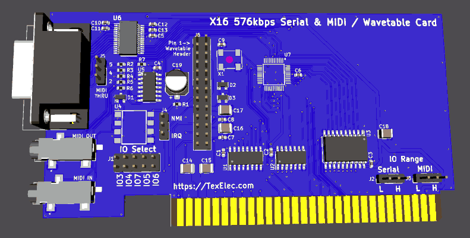

Appendix D: Official Expansion Cards
This is just a stub as a proposal for how to document official expansion cards (namely those made by the core X16 team).
Serial/MIDI UART/Wavetable Expansion Card
Kevin is designing an EIA compliant UART expansion card which is capable of supporting standard serial as well as MIDI and even has a header to install wavetable cards. It uses the Texas Instruments TL16C2550.

As the card is still in development there are not any demos or code examples available, though the datasheet contains information on how to set things up (see below). Kevin also provided some information on how to set up the card in his original announcement on the community Discord.